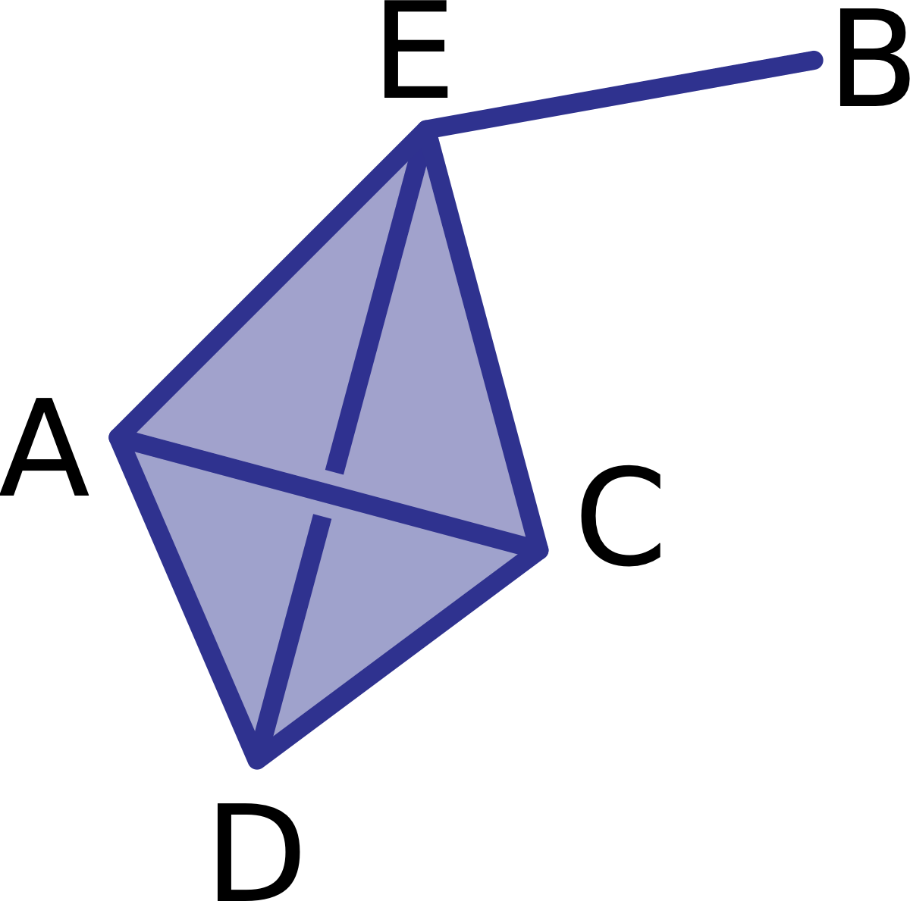
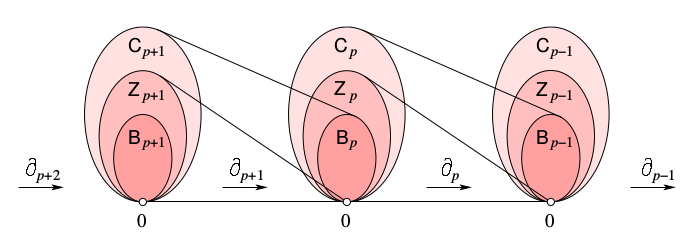
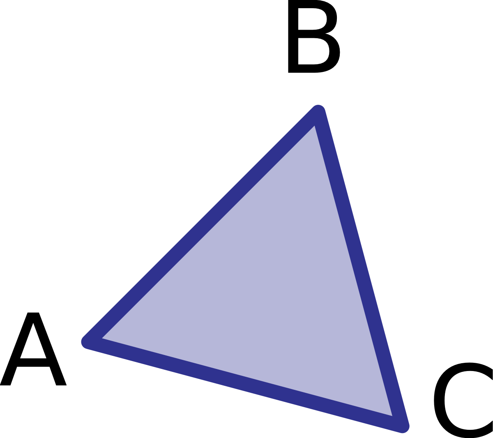
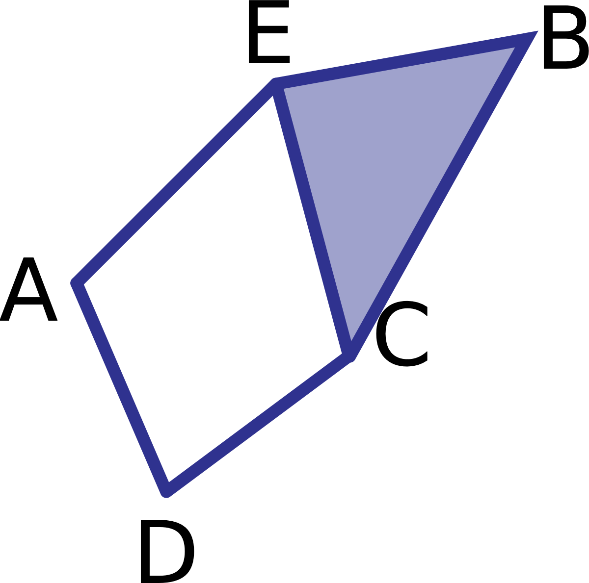

Slide transcript#
I am working on finding ways to increase accessibility of the beamer slides provided. The following is an automatically generated transcript from the pdf of the slides but is still not perfect. I would be happy to hear feedback on how this transcript can be improved for additional usefulness.
Lecture 6 - Here Comes the Homology#
Goals#
Goals for today:
Homology!
More on the boundary map#
\(p\)-Chains#
Let \(K\) be a simplicial complex and fix a dimension \(p\).
A \(p\)-chain is a formal sum of \(p\)-simplices in \(K\), written
\[\alpha = \sum a_i \sigma_i\]\(p\)-chains are added component-wise: if \(\alpha = \sum a_i \sigma_i\) and \(\beta = \sum b_i \sigma_i\), then \(\alpha + \beta = \sum (a_i + b_i) \sigma_i\)
The collection of \(p\)-chains with addition is called the \(p^\text{th}\)-chain group (vector space), \(C_p(K)\).

Boundary maps#
Matrix representation#
\(\partial_1(K) =\)
AC |
AD |
AE |
BE |
CD |
CE |
DE |
|
|---|---|---|---|---|---|---|---|
A |
|||||||
B |
|||||||
C |
|||||||
D |
|||||||
E |
Chain complex#
Cycles and Boundaries#
Important subspaces for a linear transformation#
Image
Kernel
Cycles#
A chain in the kernel of \(\partial_p\) is called a \(p\)-cycle.
The collection of \(p\)-cycles forms a subspace \(Z_p(K) \subseteq C_p(K)\).
What is a 2-cycle?#
More work space if needed#
Boundaries#
A chain in the image of \(\partial_{p+1}\) is called a \(p\)-boundary.
The collection of \(p\)-boundaries forms a subspace \(B_p(K) \subseteq C_p(K)\).
Nifty trick#
Theorem#
\(\partial_p\partial_{p+1}(\alpha) = 0\) for every \((p+1)\)-chain \(\alpha\).
Translation#
Every \(p\)-boundary is a \(p\)-cycle.
\(B_p(K) \subseteq Z_p(K) \subseteq C_p(K)\)

Try it: Cycles and boundaries#
What are the generators of \(B_1(K)\)? Of \(Z_1(K)\)?

Try it: Cycles and boundaries#
What are the generators of \(B_1(K)\)? Of \(Z_1(K)\)?

Try it: Cycles and boundaries#
What are the generators of \(B_1(K)\)? Of \(Z_1(K)\)?
Homework (In case we only get this far)
DW 2.6.3) Let \(K\) be the simplicial complex of a tetrahedron. Write a basis for the chain groups \(C_1\) and \(C_2\); boundary groups \(B_1\) and \(B_2\); and cycle groups \(Z_1\) and \(Z_2\). Write the boundary matrix representing the boundary operator \(\partial_2\) with rows and columns representing bases of \(C_1\) and \(C_2\) respectively.
Homology for real now#
Quotient space#
Let \(V\) be a vector space over a field \(k\). Let \(W \subset V\) be a subspace. Define \(\sim\) on \(V\) by \(x \sim y\) iff \(x-y \in W\).
The equivalence class of \(x\) is denoted $\([x] = x + W = \{x + w : w \in W\}.\)$
The quotient space \(V/W\) is then defined as \(\{[x] \mid x \in V\}\). This is also a vector space with:
Scalar multiplication:
Addition:
Homology#
Definition: The \(p^{\text{th}}\) homology group is the quotient space $\(H_p(K) := Z_p(K)/B_p(K)\)$
Tryit: What is \(H_1(K)\)?#
Tryit: What is \(H_1(K)\)?#
Tryit: What is \(H_2(K)\)?#
Homework
Almost certainly didn’t finish all the examples above….